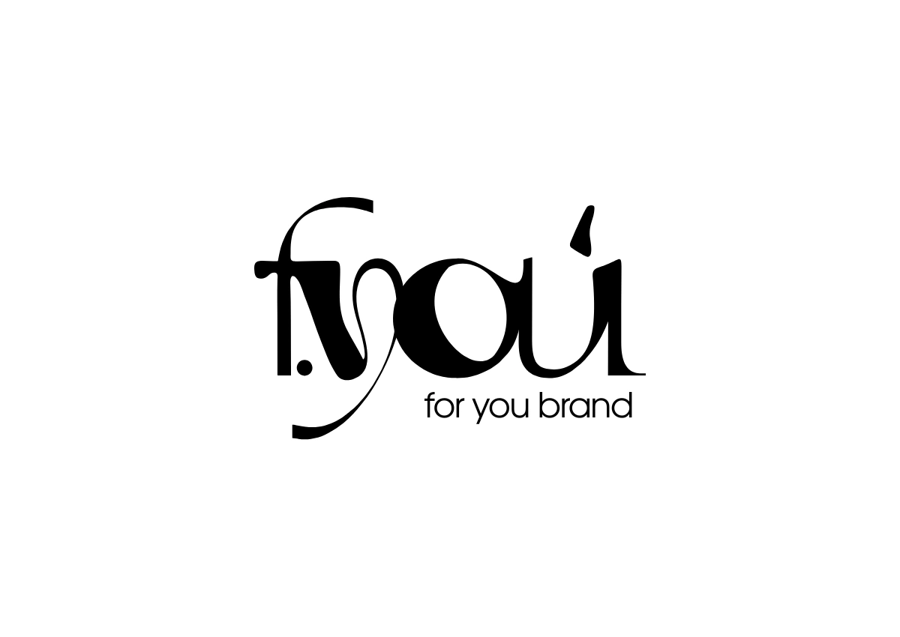
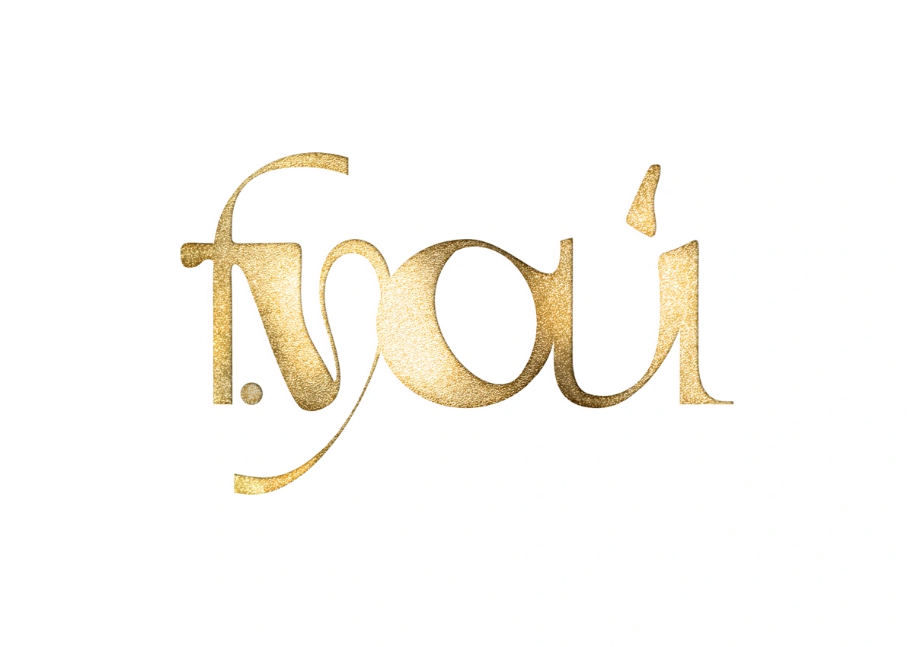
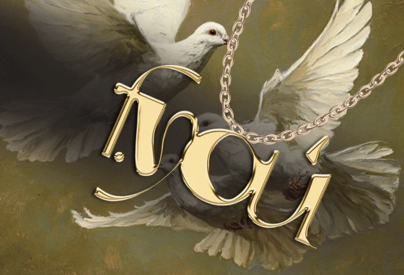
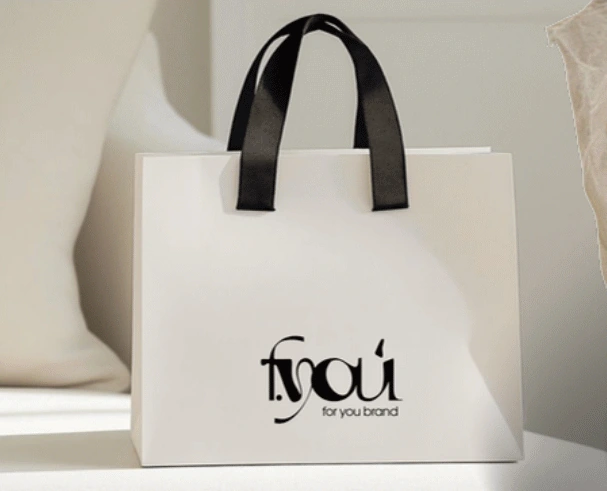
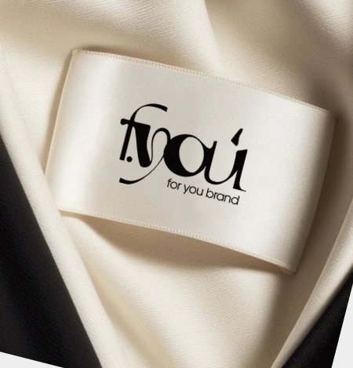
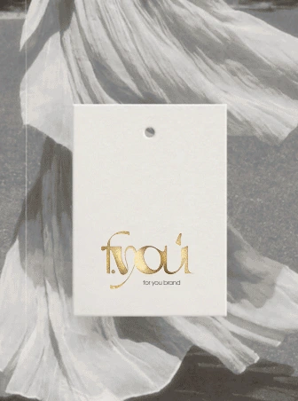
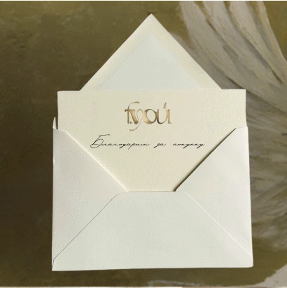

FOR YOU.
Визуальная айдентика бренда одежды: логотип, фирменные носители, оформление показов и соцсетей.

Образ бренда.
В разных форматах.
Для бренда одежды FOR YOU я создала логотип и визуальную айдентику: фирменную графику, фоны и оформление носителей. В проект также вошли афиши, экранные визуалы для показов, подарочный сертификат и материалы для соцсетей.
Молочные оттенки, приглушённый оливковый и золотистые детали задают характер айдентики. В материалах для показов к ним добавляются тёмный фон, фотографии коллекций и пластика ткани.
Пластика букв.
Узнаваемый характер.
Авторское начертание и подпись for you brand. Основная чёрная и золотистая версии для фирменных материалов и полиграфии.




Фактура, цвет
и выразительные детали.
Плавные линии, голуби и золотистые акценты связывают фирменную графику с пластикой логотипа.


Коллекция в центре.
На афише и экране.
Фотографии моделей, крупный логотип и объёмные складки ткани. Композиции адаптированы для афиш и экранного визуала показа.


Пакет, бирка
и сертификат.
Пакет, этикетка, бирка и карточка благодарности — небольшие точки контакта с брендом. Подарочный сертификат продолжает золотистую линию айдентики.









Пакет, этикетка, бирка и карточка представлены в виде визуализаций носителей. Сертификат — отдельный макет для печати.
История коллекции.
В ленте бренда.
Публикации о коллекциях и показах, имиджевые материалы и оформление ленты. Фотографии и графика поддерживают общий образ FOR YOU.